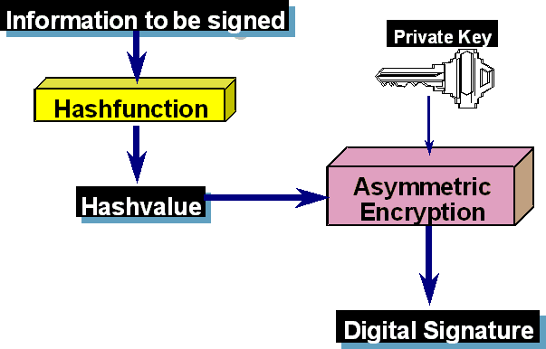

The digital signature is the counterpart of the hand made signature in the physical world for electronic documents.
It fulfils high security requirements: authenticity, integrity and liability. In many countries (e.g. European Union) the electronic signature is also legally equivalent to a hand written signature (depending on some prerequisites). For more information, please refer to the CT Book.
To generate an electronic signature you need:
The RSA signature demonstration visualizes the process of generating a digital signature using an interactive flow chart. This workflow shows the details behind the digital signature, using the methods RSA encryption and hashing.

More details about the RSA procedure are within the dialog RSA cryptosystem.